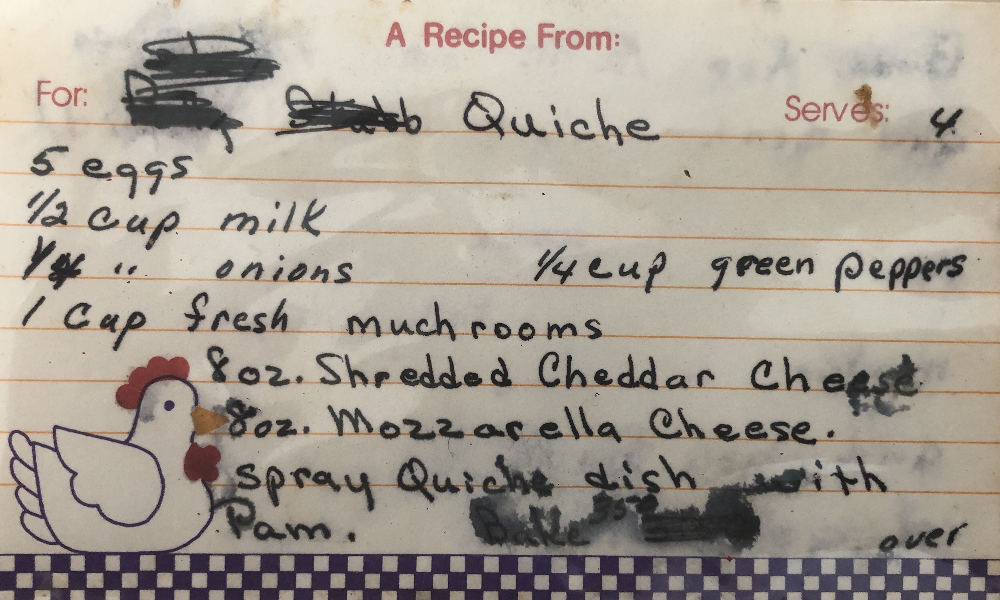
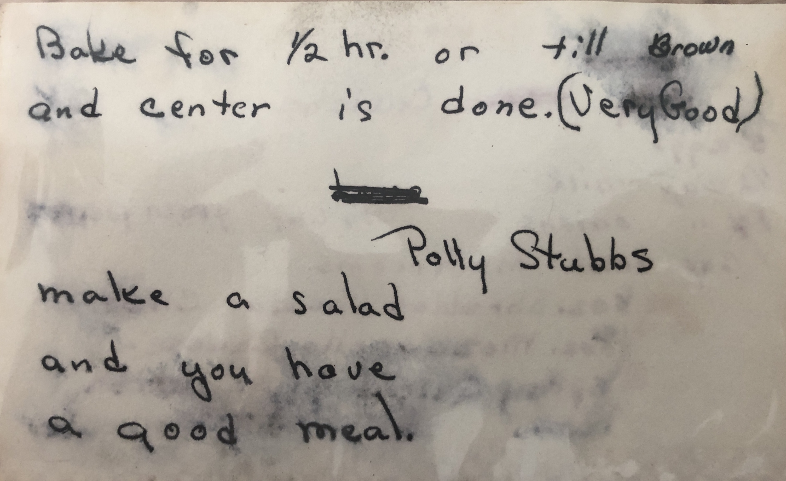

Polly's Quiche Recipe


Description
My grandma Polly used to make this quiche recipe.
It serves 4.
Ingredients:
- 5 eggs
- 0.50 cup milk
- 0.25 onions
- 0.25 green peppers
- 1 cup fresh mushrooms
- 8 oz shredded cheddar cheese
- 8 oz mozzarella cheese
Steps
- Spray quiche dish with Pam.
- Bake for 0.5 hour or until brown and center is done. (Very Good)
- Make a salad and you have a good meal.